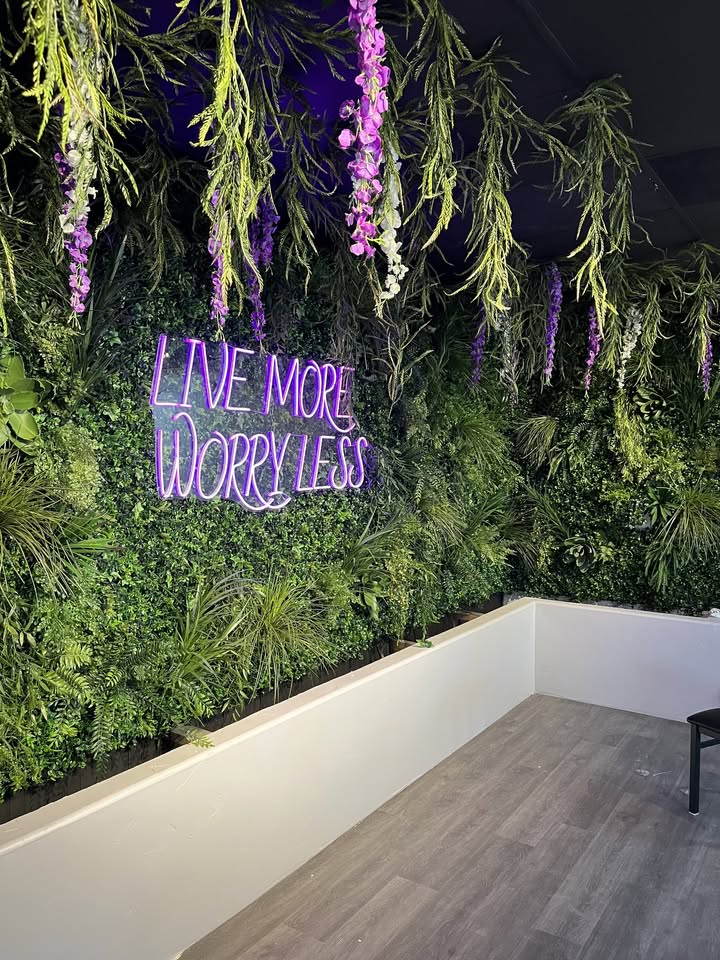
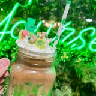
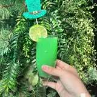
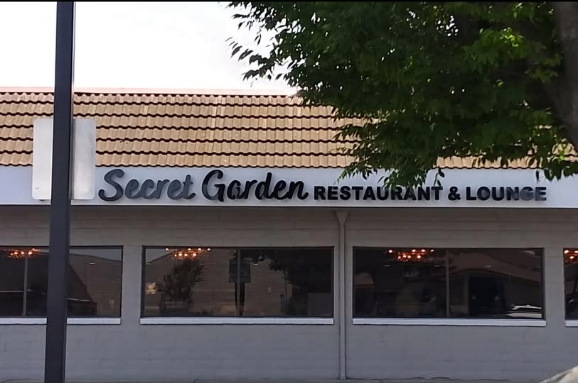

A Sanctuary Hidden in Plain Sight.
We curate living art for the discerning collector. A private greenhouse estate dedicated to the rare, the ancient, and the untamed.
Explore the Archives
arrow_right_alt
star
4.2/5 Rating
CUSTOMER REVIEWS
verified
Locally owned
The Secret Garden
location_on
2401 East Orangeburg Avenue local
Serving the community
Philosophy
"To garden is to engage in a slow conversation with the earth."
Our approach is one of intentional density. We don't just grow plants; we curate ecosystems. Every specimen in our collection is chosen for its sculptural form, historical significance, and its ability to transform a space into a living sanctuary.
Specimen No. 402 - Alocasia Regale
Archives
The Curated Wild
Staggered Scroll / Vol. 24
Ferns of the Mist
Ancient Lineage

Rare Blooms
Ephemeral Beauty

Sculptural Pots
Hand-Thrown Earth

Entrance
The Secret Path
14 Thorne Estate, Highgate
London, N6 4HG
Tues , Sun : 10am , 4pm